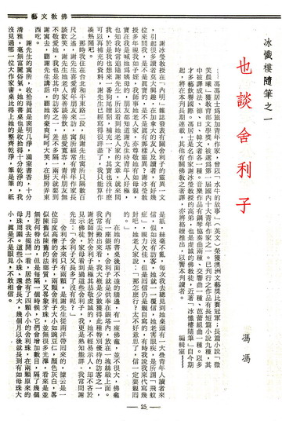
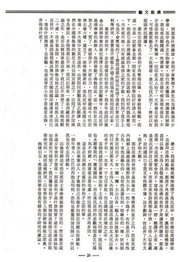

也谈舍利子
冯冯
那时我住在台北和平东路二段，与谢先生寓所只隔数百尺之遥，谢先生喜爱青年朋友来访，寓所经常有青年作家长谈欢笑，谢先生他老人家善谈善饮，慈爱宽容，青年朋友无不敬爱她，我也是其中的访客之一，差不多隔一天就要到谢寓去，听谢先生讲话，听她的豪爽呵呵大笑，在厨房弄东西吃。
谢冰莹教授在“内明”杂志发表有关舍利子的灵异一文，引起很多读者莫大兴趣，在加拿大的友人及读者，有好几位来问我，是不是真实的，是不是真有那样灵异？谢冰莹教授多年视我如子侄，我师事她老人家，亦尊敬她有如母亲，实在我是喊她为我姨母的，朋友都知道谢先生待青年人好极，也知我时常追随谢先生，所以看到她老人家的文章，就来问我，于是我也想来一番狗尾续貂，补充一下，其实也没有什么可以再补充的资料，谢先生已经写的很详尽了，我只能算作凑热闹吧。
谢先生的寓所，收拾得真是窗明几净，满室书香，十分清雅，毫无富丽俗气。她的书桌也是收拾得十分干净的，我没有见过哪一位大作家的书桌比得上他的整齐干净，笔是笔，纸是纸，丝毫不乱，每次我去总是见到他桌头有一大叠青年人读者来信，假若没有访客，他就一一覆信，他老害眼疾，是所谓“飞蚊症”，视力欠佳，但是回信仍是亲自写的，有时我说我来代写几封吧，她老人家说：“那怎么行？太不好意思了，信一定要亲自回的。”
舍利子本来只有两颗，是谢先生从南洋带回来的，是一位高僧送她的释迦牟尼舍利子，两颗舍利子大小如豌豆仁，颜色灰白，略似陈旧的法琅质，又像象牙珠，并无很多光泽，看来并无若何特出的，但是每隔一个时候，它们就增加数目，隔了几个月，我去揭开一看，居然有了四颗小小的的舍利珠，在两颗原来的母珠周围。这些小珠，还会长大，几个月以后就长到有如母珠大小，真是不是眼见，不敢相信。
在她的书桌后面不远的墙边，有一座佛龛，并不很大，佛龛内有一座银塔，舍利子就是供奉在银塔内，放在一块丝缎上面。我常去搬出来看，我大概是少数获得此种特别优待的访客之一，谢老师对于舍利子是极其恭敬虔诚的，她不轻易示人，却不吝于见示佛教徒，家母看到过这些舍利子，我更是熟知能详。我常问谢先生：“舍利子又长多了没有呢？”
到底是什么缘故，舍利子会繁殖？谢先生也请教过不少学者，其中也不乏生物学家，却仍然未获得一个满意的解释，我也为此翻阅过一些书籍。印度古籍中倒是颇有提及，不少述说舍利子的繁殖，一位印度友人抄了一大串书名来给我，可惜搬家丢了一大批书籍，连它也找不到了，将来只有从头来找证据。
谢先生说等此次舍利子再繁殖以后，她会给我几颗，我这一次一定要拿去那一中间有名的生物学院好好请人研究一下，到底它是什么构成的？谢先生说送给人的有些能再繁殖，大多都不能。只有虔诚奉佛之家的才能，我怕到了我手上，也是不会繁殖的了，像我这样的猴儿性情，还要打算送它去科学研究，委实是不虔诚。不过，我认为有寻根问底的必要。
谢家的舍利子，并非我仅见的舍利子。我多年前陪同旧金山佛禅学会的两位冯博士兄弟在台北参观佛寺，冯氏昆仲是佛禅会的创办人，他们发动了佛教信徒，从一无所有之情形之下，买了一座破房子，大家出力，把它修建成今日的宏伟五层大楼，建立了一座佛教图书馆。冯氏昆仲是美国土生华侨，不大懂中文及普通话，由我陪同参观及为之翻译，我们在中国佛教会的数位主持法师安排之下，访问了许多间佛寺及僧院，多得我都记不清，我只记得有一处是西藏活佛驻锡之所，是否法号为章嘉活佛？我已记不清楚了，那时我刚二十岁，孩子气未脱，对于佛教也缺乏认识，我被挑上陪冯氏昆仲，不过是因为我能说几句英文、能说浅浅薄薄的国语而已，懂得什么佛理？去参观，也就是等于小孩子看风景名胜，弄得清什么？
总之，我就是糊里糊涂地带了冯氏昆仲，还有几位美国佛徒，去参拜活佛的锡所，那房子外表是普通人家，里面却是佛堂，参拜以后，主持人恭敬地捧出活佛的舍利子来让我们瞻仰，那是我第一次见到佛家舍利子。当时见到就是一愣，翻译不上来，还是冯氏昆仲自己看到，用英文来告诉我那是什么，主持人似是藏胞，说的国语口音我又有些听不懂，比手划脚，彼此弄了大半天，我才知大概。
那位活佛的舍利子是供奉在一只精美的盒子之内，我看见盒内丝缎上满处是各种形状大小不一的小珠子，有些是灰白，有些白色，有些是绿色的，也有些是黄色的。暗绿色的一种，状如剥了果皮的桔子，有一瓣一瓣，大小只有一颗人造珍珠那么大，小的只有黄豆那么大。主持人告诉我，说这是活佛在台北火化以后的舍利子。一共有一千七百多粒，而且还时常在增加之中。
当时我就问怎么会增加呢？主持人的回答不大明了，我以为他未听懂我的“广东国语”，而且冯氏昆仲的参观时间表又忙得很，马不停蹄，赶着要去看他处，所以我也就不再多问。
这是在见到谢先生寓所的舍利子之前的事。
后来在谢寓出入，才后悔自己未能多向那位西藏法师请教，一个年青人，巴巴的再跑去叩问，恐怕也难获得接见赐示，所以我也没有再去请教。
以后常听说有些俗家居士奉佛虔诚修持有恒的，焚化后亦或多或少有舍利子发现，到底舍利子是什么物质？就不是浅薄无知如我者所可得知了。我若获得舍利子，我无疑是要将它送去给科学研究的。相信这种研究，只有帮助世人更加明了佛教之深奥。
(抛砖引玉，希望能见到学者发表有关舍利子研究的谠论。)
永忏楼随笔作者介绍：
冯冯居士为旅加青年作家，曾以“水牛的故事”(英文)荣获澳洲文艺奖比赛冠军；长篇小说“微笑晨曦”获教育部文学奖，被选为第一届国内十大青年作家之一。已刊行之作品有长短篇小说九种，其中被译成法、德、日、韩文者各一种。音乐作品有钢琴协奏曲两种、交响曲一种、芭蕾组曲一种。以多才多艺饮誉国际。冯居士是名作家谢冰莹教授的高弟，也是虔诚的佛教徒，近着“永忏楼随笔”自今期起，将在本刊长期连载，其他有关佛教之译着，亦将络续推出，以飨本刊读者。 ──编辑室
原载香港《内明》月刊第48期：1976年03月1日